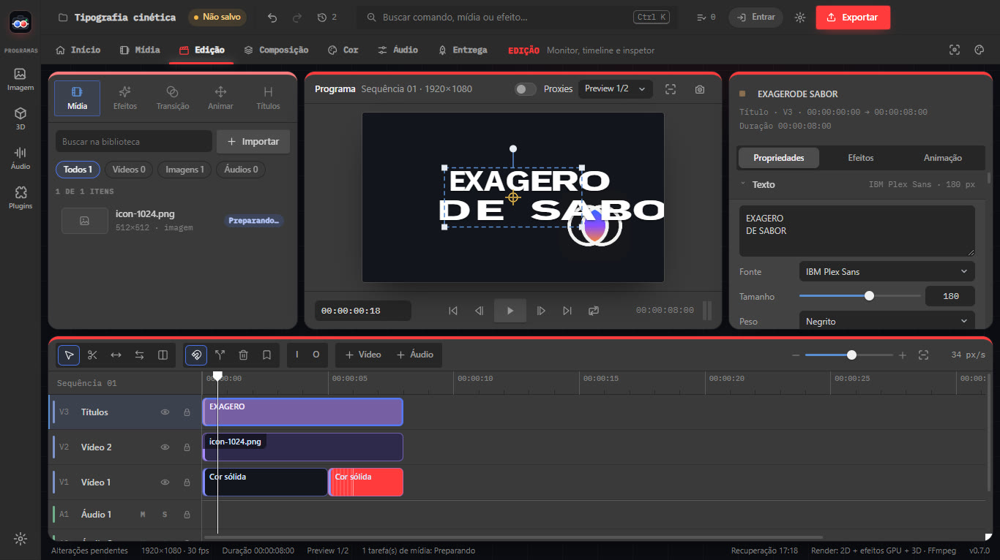
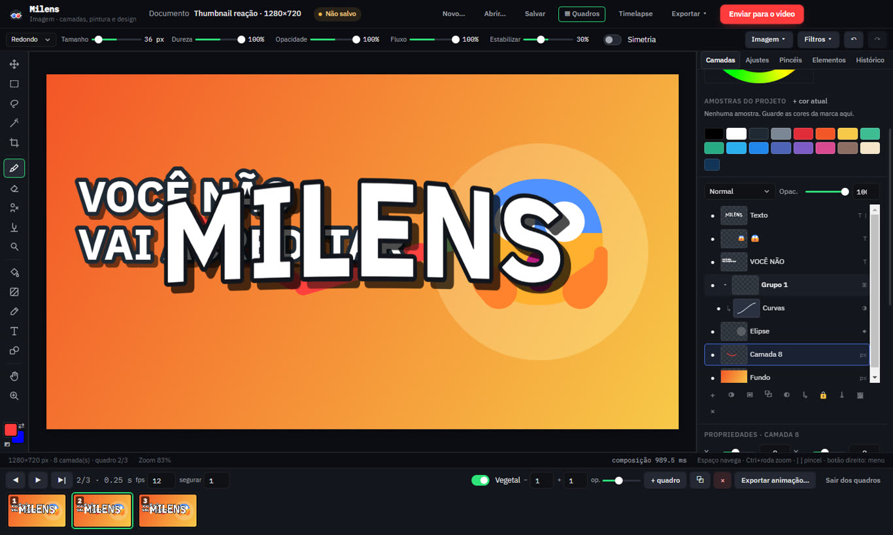
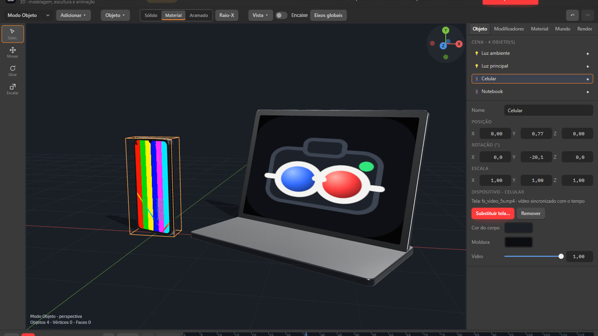

Conta dentro do programa
Entre com a conta Milens e a chave PRO ativa sozinha. Sem chave? Um clique leva ao seu perfil no site.
Vídeo e motion graphics, pintura e quadro a quadro, áudio, 3D com mockups e uma biblioteca de plugins. Tudo abre do mesmo projeto e sai no formato certo para Reels, TikTok e YouTube.
Cada programa abre em sua janela, com ferramentas próprias. O que você faz num deles aparece nos outros na hora.
Entre com a conta Milens e a chave PRO ativa sozinha. Sem chave? Um clique leva ao seu perfil no site.
Máscara de recorte, camadas de ajuste, estilos, pincéis com textura, quadro a quadro com papel vegetal e gravação do processo.
Caminhos com morph e SVG, animador por caractere, ladrilho e pincelada; mockups com tela em vídeo, céu, scatter e profundidade de campo.
Corte com precisão, mova a câmera com keyframes e curvas, anime texto letra por letra, corrija a cor com scopes e entregue em 4K. Tudo no Lite, sem limite de projetos.

Camadas com máscara de recorte, camadas de ajuste e estilos, warp de texto sobre objetos, pincéis com textura e estabilizador. Modo Quadros com papel vegetal, e gravação automática do seu processo em timelapse.
Conhecer o Imagem
Coloque sua tela num celular ou notebook 3D, orbite a câmera, ilumine com sol e ambiente, espalhe grama e pedras, renderize com desfoque e brilho. O render entra como clipe na timeline.
Conhecer o 3D
Grave uma vez, corte em clipes para cada rede, com legenda, capa e formato certos.
Formas, morph, tipografia cinética, câmera e curvas. Sem plugin para o básico.
Pintura com pressão, camadas de ajuste, warp, timelapse do processo pronto para postar.
Paleta de marca por projeto, presets por plataforma e fila de exportação.
Cenários escritos pela equipe para mostrar o caminho dentro do programa. Quando as primeiras pessoas publicarem, os comentários reais aparecem nas páginas de cada programa.
"Gravei um podcast de 1h40. No Milens marquei nove trechos, escolhi Reels para todos e exportei em lote enquanto tomava café."
"A thumbnail foi feita no Imagem com warp do texto sobre o produto e camada de ajuste; salvei e ela já estava na timeline do vídeo."
"Coloquei a tela do app num celular 3D, orbitei a câmera com dois keyframes e o render entrou na timeline com fundo transparente."
Sem anúncios, sem limite de projetos. A chave PRO vale em dois computadores e funciona sem internet.
R$ 0para sempre
R$ 249por ano · R$ 20,75/mês
R$ 29,90por mês · cancele quando quiser
Windows 10 ou 11, 64 bits, 8 GB de RAM e uma placa de vídeo com WebGL 2 (qualquer uma dos últimos 8 anos). 4K e 3D ficam mais confortáveis com 16 GB.
Não. O Lite exporta até 1080p com uma marca d'água discreta e não abre o Imagem, o 3D, os plugins nem os efeitos premium. Todo o resto é igual ao PRO.
Quando os cinco programas fizerem tudo que prometemos nesta página, com teste de verdade. Até lá, o Lite é grátis e as novidades aparecem em Novidades.
Sim: Arquivo → Importar projeto aceita EDL (CMX 3600), FCPXML, XML do Final Cut 7, OTIO e MLT/Kdenlive.
Ainda não. Ao criar a conta você pode marcar seu sistema; avisamos quando houver versão.
Projetos e mídias nunca saem do seu computador. A conta guarda só nome, e-mail, plano e chave. Detalhes em Privacidade.
Crie uma conta, baixe o Lite e edite o primeiro projeto em minutos. O PRO fica a uma chave de distância.
Windows 10 ou 11 · 64 bits · instalador de 118 MB